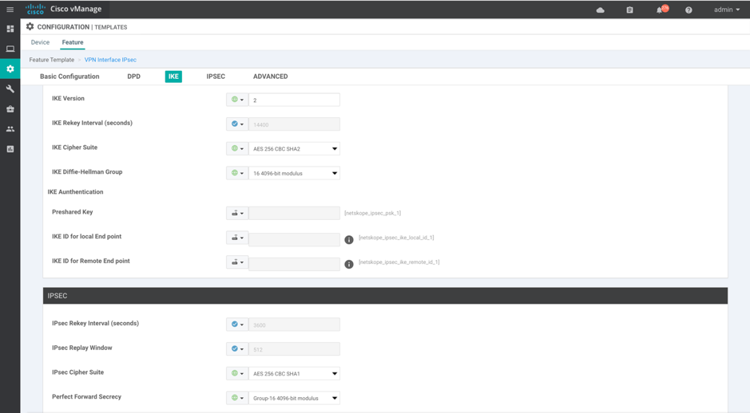
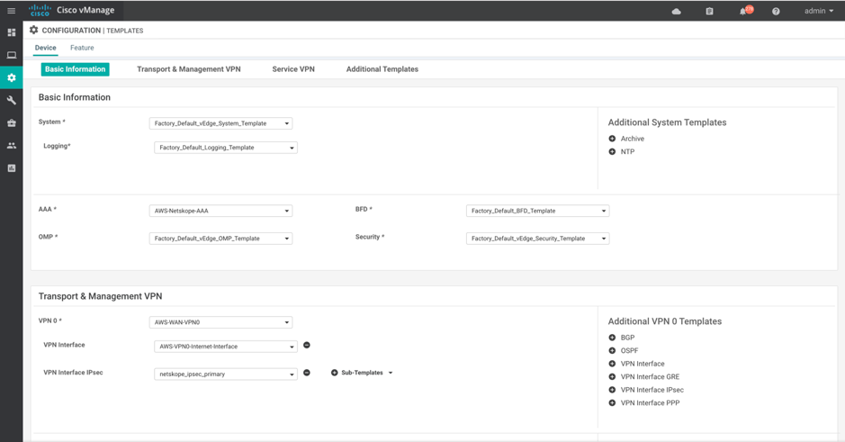
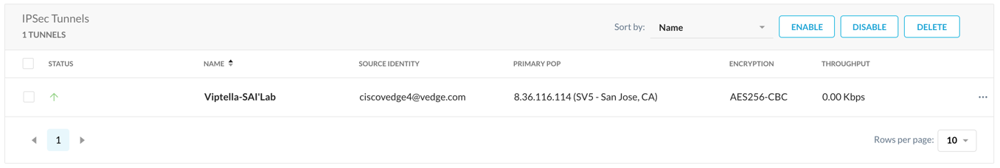

Configure Netskope IPSec with Viptela vEdge
This document provides Instructions for integrating Cisco SD-WAN (Viptela) with Netskope to selectively steer traffic over an IPSec tunnel.
In the Netskope UI, go to Settings > Security Cloud Platform > Traffic Steering > IPSec and click Add New Tunnel.

Configure these parameters:
Tunnel Name: Enter a tunnel name that makes sense to your topology.
Source IP Address: Enter the public IP of the Viptela tunnel.
Source Identity: Enter the FQDN string here, structured like an email address.
Primary Netskope POP: Select the POP closest to your vEdge from the dropdown list.
Failover Netskope POP: Select the POP second closest to your vEdge from the dropdown list.
Pre-Shared Key: Enter your pre-shared key.
Encryption Cipher: Select an encryption cipher from the dropdown list, like AES256-CBC.
Maximum Bandwidth: Select the bandwidth appropriate for your vEdge bandwidth capabilities.
In the Viptela vEdge UI, go to Settings > Configuration Template > Feature > Basic Configuration.

Configure these IPsec Tunnel interface parameters:
Interface Name: Enter a tunnel interface name.
Tunnel IP Address: The tunnel IP address can be any /30 IP address and it is not required to be routable. Currently, IP unnumbered is not supported on IPsec tunnels.
Source: Select the Source Interface or Source IP address.
Destination: Select the destination IP address.
Go to the IKE page.
 Configure these IKE parameters:
IKE Version: 2
IKE Cipher Suite: AES-256-CBC-SHA2
IKE DH Group: 16 4096-bit modulus
Preshared key: Use the preshared key defined in the Netskope UI.
IKE Local ID : FQDN string.
IKE remote ID: FQDN string.
IPSec Cipher Suite: AES-256-CBC-SHA1
Perfect Forward Secrecy: Group-16 4096-bit modulus
Go to Device > Basic Information.
 VPN Interface IPsec: Attach the interface feature template you just configured.
In the Netskope UI, go back to the IPSec page (Settings > Security Cloud Platform > Traffic Steering > IPSec). Within 5 minutes you should see the new IPSec tunnel represented as Up (a green arrow in the Status column).
 Click on the Green Up Arrow to see the tunnel details.

Status should be green in the Viptela UI as well.

You can also see the status in the CLI using these commands:
show ipsec ike sessions | tab show interface ipsec1 | tab

View the IPsec Tunnel configuration pushed to the v-Edge appliance:
AWS-vEdge4# show running-config vpn 0 interface ipsec1 vpn 0 interface ipsec1 ip address 10.10.10.1/30 tunnel-source-interface ge0/0 tunnel-destination 8.36.116.114 ike version 2 rekey 14400 cipher-suite aes256-cbc-sha2 group 16 authentication-type pre-shared-key pre-shared-secret <pre-shared-key> local-id <local-id> remote-id 8.36.116.114 ipsec rekey 3600 replay-window 512 cipher-suite aes256-cbc-sha1 perfect-forward-secrecy group-16 no shutdown
In Viptela, configure a Route Policy to match whichever traffic you want to route toward Netskope.